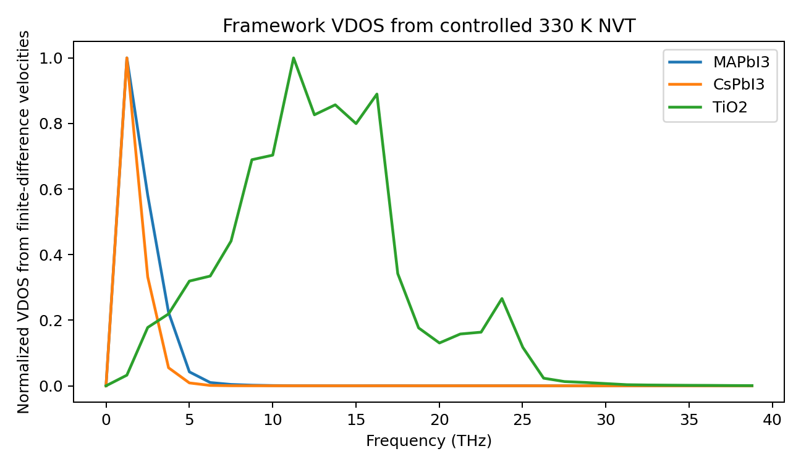
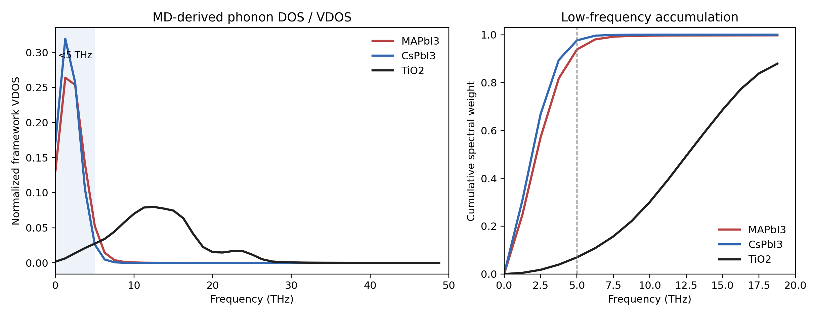
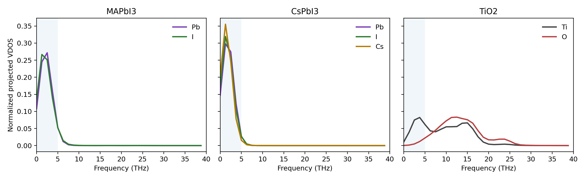

Perovskite Dynamics
Perovskite Softness from Controlled NVT Spectra
This note packages a controlled comparison between two lead-halide perovskites, MAPbI3 and CsPbI3, and a TiO2 reference. The purpose was to test whether the often-used statement "perovskites are soft" can be seen directly in atomistic trajectories, without mixing different temperatures, time steps, or trajectory lengths.
Controlled Setup
All three systems were rerun with the same molecular-dynamics controls: 330 K, 0.5 fs time step, 2000 NVT steps, one frame per step, 600 eV plane-wave cutoff, and Gamma-centered 2x2x2 k points. The final successful VASP setup used LREAL = .FALSE., ALGO = Normal, and SMASS = -1.
The comparison deliberately avoids mixing old trajectories with different frame counts. The first 20 percent of each 2000-step trajectory was skipped as equilibration, leaving 1600 frames per system for the reported statistics.
The remote working directory was:
/public/home/gaolihui/codex/controlled_nvt_2000_smassm1_20260530
Two earlier parameter choices failed for CsPbI3 and were not used for the final statistics: LREAL = Auto triggered a REAL_OPT internal error, and LREAL = .FALSE. with SMASS = 0 stopped near step 70 with a PSSYEVX subspace-rotation error while the reported temperature remained at 0 K. This is already a useful warning that the perovskite run is numerically less forgiving.
Structural Fluctuations
The first diagnostic is local structure. For perovskites, B-X means Pb-I and the bridge angle is Pb-I-Pb. For TiO2, B-X means Ti-O and the bridge angle is Ti-O-Ti.
| System | Bond mean +/- std (A) | Bond 5-95% (A) | Bridge mean +/- std (deg) | Bridge 5-95% (deg) | Octahedral deviation (deg) | Frame-mean bridge std (deg) |
|---|---|---|---|---|---|---|
| MAPbI3 | 3.2074 +/- 0.0555 | 3.1223-3.3070 | 156.48 +/- 8.12 | 146.30-170.24 | 5.09 +/- 4.01 | 1.24 |
| CsPbI3 | 3.2639 +/- 0.0945 | 3.1357-3.4557 | 145.42 +/- 11.84 | 129.54-170.97 | 3.90 +/- 4.79 | 10.25 |
| TiO2 | 1.9732 +/- 0.0878 | 1.8413-2.1282 | 119.81 +/- 15.81 | 94.62-136.26 | 5.29 +/- 3.67 | 0.06 |
The raw Ti-O-Ti angle distribution is broad because the TiO2 reference has a richer static topology of local angles. The clearer dynamic signal is the frame-mean bridge fluctuation: MAPbI3 is about 20 times TiO2, and CsPbI3 is about 164 times TiO2. The perovskite framework is therefore not merely statically diverse; it moves collectively in time.
Displacements and Collective Modes
A second diagnostic uses displacements after removing the center of mass. The framework atoms are Pb+I for the perovskites and Ti+O for TiO2. Principal-component analysis was then applied to the displacement covariance matrix.
| System | Framework RMS displacement (A) | B RMS (A) | X RMS (A) | VDOS <5 THz | VDOS centroid (THz) | PC1 fraction | PC1 per-atom RMS (A) | Effective modes |
|---|---|---|---|---|---|---|---|---|
| MAPbI3 | 0.1789 | Pb 0.0996 | I 0.1984 | 0.965 | 2.28 | 0.775 | 0.1575 | 1.6 |
| CsPbI3 | 0.3312 | Pb 0.0029 | I 0.3825 | 0.993 | 1.68 | 0.796 | 0.2957 | 1.5 |
| TiO2 | 0.1165 | Ti 0.1298 | O 0.1093 | 0.049 | 12.79 | 0.189 | 0.0506 | 13.2 |
The PCA result is especially compact: roughly 78-80 percent of the perovskite framework variance sits in one collective mode, while TiO2 distributes the same analysis over many more modes. This is the trajectory-level version of a soft-mode picture.

MD-Derived Phonon DOS
I did not find reusable FORCE_CONSTANTS, FORCE_SETS, or phonopy.yaml files in the inspected working directories, and the login environment did not provide a Python phonopy module. The figures below therefore show a finite-temperature VDOS estimated from MD velocities, not a formal 0 K harmonic phonon band structure.
This distinction matters: a harmonic phonon calculation tests the curvature of one reference structure, while the MD-derived VDOS tests what the 330 K trajectory actually samples. For soft, anharmonic perovskites, the latter is often closer to the NVT stability question.

| System | <2 THz | <5 THz | <10 THz | Centroid (THz) | Peak (THz) | <5 THz / TiO2 |
|---|---|---|---|---|---|---|
| MAPbI3 | 0.247 | 0.818 | 0.995 | 2.60 | 1.25 | 20.7 |
| CsPbI3 | 0.308 | 0.895 | 1.000 | 2.01 | 1.25 | 22.6 |
| TiO2 | 0.005 | 0.040 | 0.221 | 12.81 | 12.51 | 1.0 |

Interpretation
The controlled comparison points to the same conclusion from several independent directions. Pb-I frameworks show larger thermal displacements, much larger low-frequency spectral weight, and a displacement covariance dominated by a small number of collective modes. TiO2 has broader static Ti-O-Ti angle diversity, but its time-dependent frame-mean geometry is far more stable and its spectral weight sits at higher frequencies.
This explains why short perovskite NVT runs can be misleading. A 1 ps trajectory can already expose the low-frequency modes, but it is still short for converging their statistics. The important motions are slow octahedral tilts, A-site motion, Pb/I framework breathing, and local off-centering. Their periods and correlation times are long compared with high-frequency bond vibrations, so the trajectory must be longer before averages, frame distributions, and training snapshots stop depending strongly on the initial phase of a soft mode.
It also explains why neural-network training is more difficult. The model has to learn a shallow, anharmonic, multi-minimum potential-energy surface where small force errors can move the trajectory into a different tilted or displaced basin. The relevant training distribution is broad and collective: many structures are connected by low energy barriers, and the electronic structure is sensitive to Pb-I-Pb angles, Pb/I displacements, and A-site disorder. TiO2 is comparatively stiffer, so a shorter trajectory samples a narrower and more repetitive region of configuration space.